PORTFOLIO / 2026DESIGN · MOTION · EVERYTHING IN BETWEEN
PERSONAL CREATIVE ARCHIVE
A LITTLE
OFF THE
GRID.
A collection of things I make, things I notice, and ideas that refuse to sit still.
NO. 001
FORM STUDY
FORM STUDY




✳
MADE
WITH
INTENT
WITH
INTENT
SCROLL TO GET LOST↓LAT. 06° / LONG. 107°
DESIGN WITH FEELING ✳MAKE IT WEIRD ✳KEEP IT HUMAN ✳DESIGN WITH FEELING ✳MAKE IT WEIRD ✳KEEP IT HUMAN ✳
01 / THE POINTA WORK IN PROGRESS
NOT HERE TO
FIT IN. HERE TO
MAKE A MARK.

This space is part portfolio, part sandbox. Graphic design, visual experiments, moving images and little fragments of the internet all live here.
ABOUTME ↗
02 / SELECTED FRAGMENTSVIEW ALL WORK ↗

GOT A GOOD
FEELING ABOUT THIS?